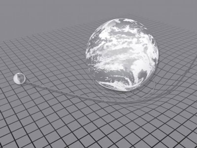
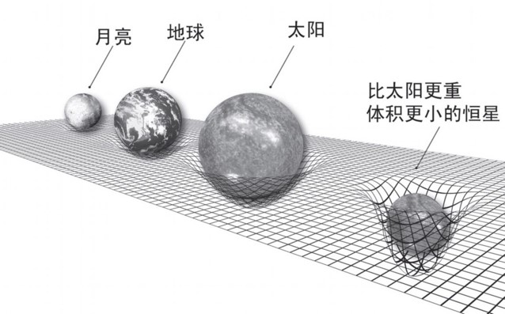
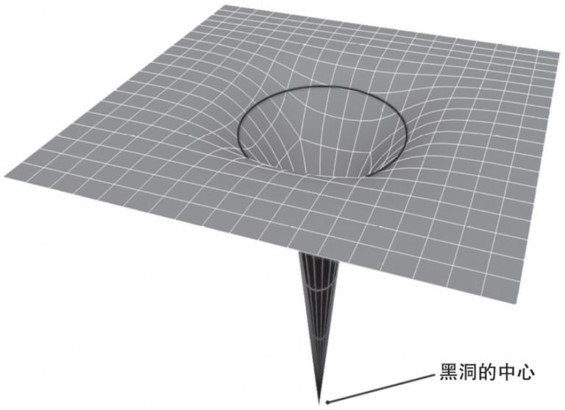
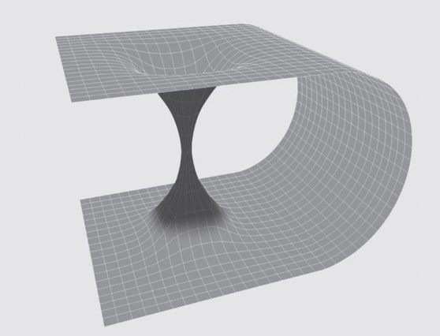

时间的形状
我在读这本书的时候真的懂了时间是什么形状的，虽然现在我忘了.
第一次读《时间的形状》是在大一上学期，在图书馆翻到了这本书。
自从中考后偶然读了《上帝掷骰子吗》这本量子物理史话，我整个高中都对相对论和量子力学念念不忘，无奈高中实在没有条件也没有时间去关注这些“课外知识”。高考后我重温了一遍《上帝掷骰子吗》，也重新激起了对现代物理的热情。
上了大学之后，学校的图书馆给了我进一步了解现代物理的条件。大一上学期，我前后共借阅了十余本关于量子物理和相对论的书，其中不乏一些世界出名的译本，然而到现在，让我对书中内容依然有印象的却是《时间的形状》这本当时感觉最通俗最让我没有耐心细细研读的书。
对于书中所讲，我依稀记得改变了我世界观的三点：
一，时间相对静止.
假定我们的世界是三维空间与时间组成的四维时空，则在这个四维时空中，任何物体的运动速度都为光速 c.
我们还记得光速合成定理，空间坐标轴中x、y、z 三轴方向上物体的分速度合成它的运动速度；同理，在四维空间中，物体的 移动速度 和 时间 合成了它的“四维运动速度（请允许我创造这个词来辅助理解）”。再根据前面我们提到的任何物体的“四维运动速度”都为光速 c，不难理解，总速度一定，物体在三维空间中移动速度越大，在时间维就越慢。所以高速运动的物体时间会变慢，而光的时间是静止的。
二，质量(引力场)造成空间扭曲
如果空间是“平坦的”，各种物体就会在这个空间中直线通过，如果空间是“弯曲的”，各种物体就会顺着弯曲空间走出弯曲的路线来（其实空间是不均匀的，物体在自己的那部分空间中走的一直是直线，而我们作为观察者处在另一部分空间，看到那个物体的运行轨迹就是弯曲的）。质量造成空间弯曲（不均匀）一个具有确定质量和速度的物体，如果在离开其他质量都很远的地方运动，那么，它的路径真的可以说是一条直线。而当它走近另一个质量的时候，它的路径就会变得越来越弯曲。显然，是质量把空间弯曲了。质量越大，离质量越近，空间弯曲的曲率就越大。这也就能解释光的运动轨迹可以弯曲，当光在弯曲空间里穿过时，它的路径也会弯曲起来。
既然质量可以使空间扭曲，那么体积极小的极大质量（如黑洞）是不是可以将空间扭曲到极致而形成“虫洞”呢？如果读者不想在我表述不清的混乱言语中耗费太多脑筋，就当上面的一句话您没看到吧；如果您很感兴趣并想进一步思考一下，我将提供几幅图来辅助您。



三，宇宙有限无界
如果我说向着空间某一方向发射一段脉冲信号，若干时间后你将从背后收到这段信号，你会不会立即想到环地球航行。然而我要告诉你，宇宙可不是这么简单的。宇宙是质量、空间、时间的结合，三者是不可分立的。你可能已经被绕晕了，通俗的说，这不是三种东西，而是同种东西，主观来讲，你的空间和时间就是你自己的空间和时间，宇宙外才是真空，没有空间，没有时间。
讲到这里，笔者成功把自己讲糊涂了，我现在头脑很乱，只想静静，所以这篇文章到此结束。
这篇文章完全基于我的理解，如果有些部分让您实在看不过眼，欢迎通过邮箱 指(dui)正(wo).
2017年3月23日13:26:12